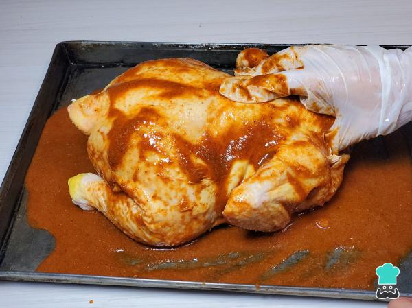
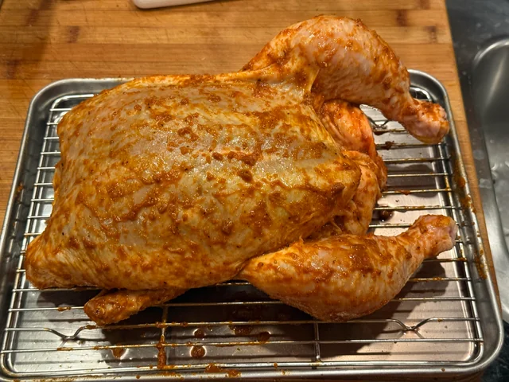
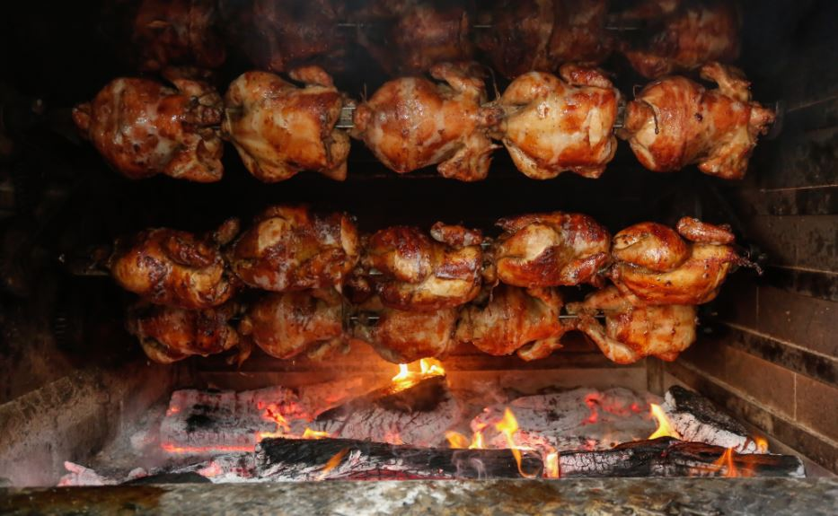
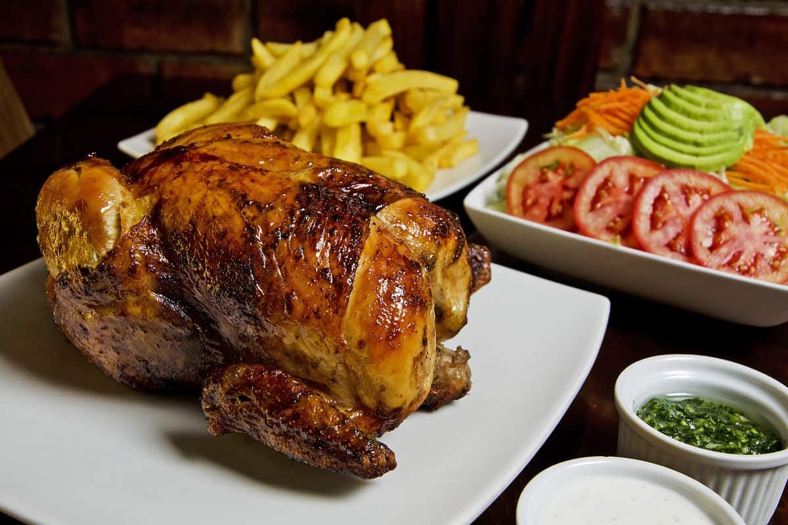

Sabor Criollo
Sabores peruanos que conquistan el corazón
Sabores peruanos que conquistan el corazón

El Pollo a la Brasa es uno de los platos más emblemáticos y consumidos del Perú. Su sabor único proviene de un marinado especial con especias, sillao y cerveza negra, además del característico toque ahumado durante la cocción. Se sirve tradicionalmente con papas fritas y una rica ensalada fresca.




Aprende a preparar pollo a la brasa casero con ingredientes tradicionales.